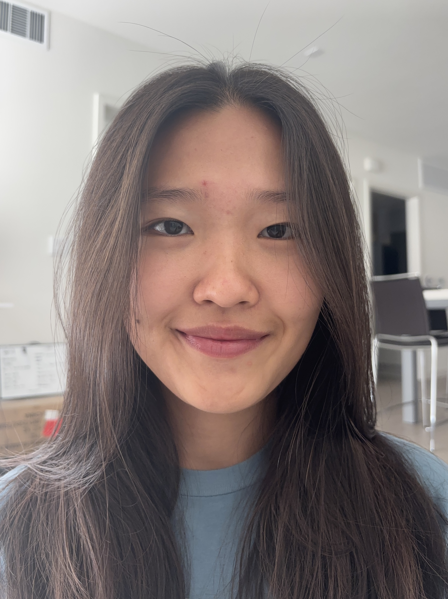
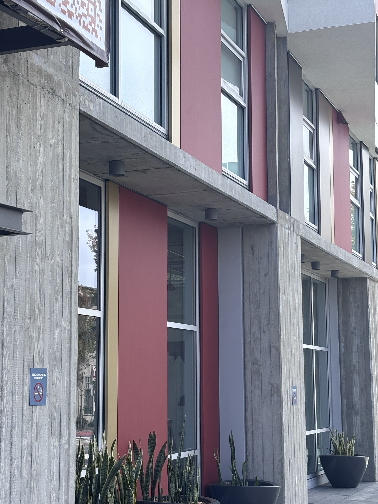
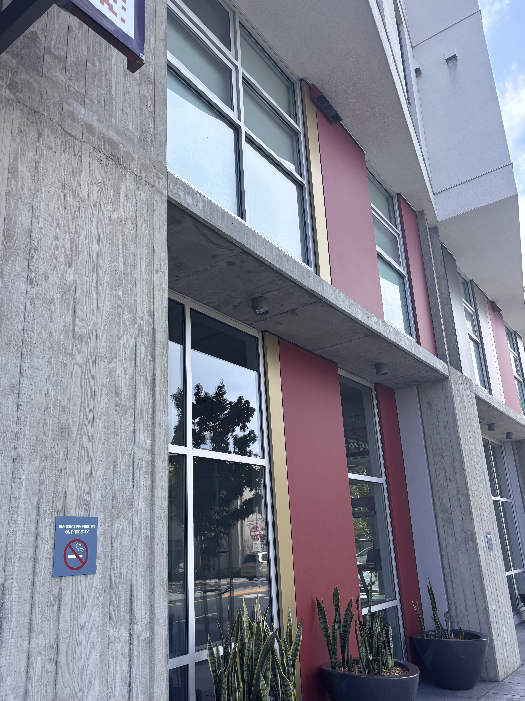

UC Berkeley CS 280A
Computer Vision and Computational Photography
Project 0
Becoming Friends with Your Camera
September 1, 2026
Part 1: Selfie: The Wrong Way vs. The Right Way

The first photo was taken with the camera just inches from my face, which introduces perspective distortion: the features closest to the lens (my nose) get magnified relative to features farther away (my ears), warping the proportions of my face. The second photo was taken from several feet back and zoomed in with a longer focal length, so the distance from the camera to every part of my face is nearly the same. That compresses the perspective and keeps my proportions natural, which is why it looks more like how I actually look.
Part 2: Architectural Perspective Compression


The first photo was taken close to the building with a wide field of view, which exaggerates the difference in distance between near and far parts of the facade — the columns nearest the camera look much bigger than the ones farther down the building, and vertical lines converge sharply. The second was taken from much farther away and zoomed in with a longer focal length, which compresses depth: near and far parts of the building end up closer in apparent size, flattening the facade and making it look more parallel to the camera.
Part 3: The Dolly Zoom